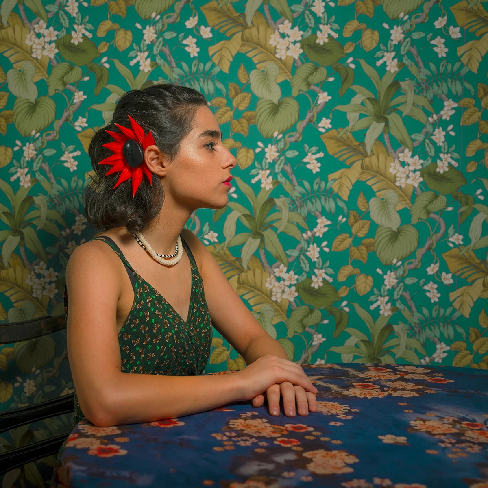

Photography has never only been about images for me. It is always connected to people, questions, and the way we understand ourselves through what we make. My work as a documentary photographer took me across countries and stories, and eventually to studying photography at the Royal Academy of Art in The Hague.
Most of the photographers I met weren't held back by technique. They were unsure what genuinely mattered to them, or what kind of work they wanted to make.

© Hossein Fardinfard"Why are you making these photographs?"
That question, asked repeatedly during my studies, kept returning in conversations with other photographers over the years. Beyond Frame grew directly out of those conversations, a space to develop both the work and the person making it.
A selection from over a decade of work. The full record lives on my portfolio.
Start From Within. Your story, your experiences, your concerns. Clarity comes first.
Create With Purpose. Ideas become images that carry meaning and reflect who you are.
Present With Confidence. An honest, clear, professional portfolio and way of presenting work.
Step Into the Real World. Opportunities, connections, and positioning your work with intention.
If this resonates, start with a private Direction Session, one call to get clarity on your work and your next step. Or see how it works.